deeplearn_rnn
循环神经网络(Recurrent Neural Network, RNN), recurrent是"重复发生", “周期性的发生"的意思, 这里翻译为循环.
循环有重复并持续的意思, 从某个地点出发, 经过一定时间又回到这个地点, 然后重复进行. 注意循环需要一个"环路”. 通过数据循环, RNN一遍记住过去的数据, 一边更新到最新的数据.
单步RNN层
时刻的输入是, 这表示会被输入到RNN层中, 然后对应输出.
这里各个时刻RNN层输入的是向量, 比如, 在处理句子时, 每个单词以词向量的形式作为输入.
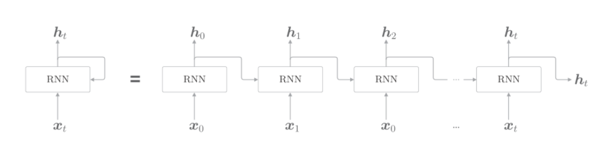
各个时刻的RNN层接收传给该层的输入和前一个时刻RNN层的输出, 然后计算当前时刻的输出, 公式如下:
RNN有两个权重, 控制前一时刻的输出, 控制当前时刻的输入.
首先执行矩阵的乘积运算, 然后使用tanh变换他们的和, 结果是时刻的输出. 这个一方面向上输出到另一个层, 另一方面向右输出到下一个时刻的RNN层.
当前时刻的输出, 一部分由上一时刻的来控制, 这可以解释为RNN具有状态, 并被不断的更新.也就是说RNN层是具有状态(hidden state)的层.
RNN层输出了两个箭头, 这两个箭头代表的是同一份数据.
Backpropagation Through Time
RNN展开收, 可以看做水平方向的神经网络, 因为这里的误差反向传播法是"按时间顺序展开的神经网络的误差反向传播法", 所以称为Backpropagation Through Time, BPTT
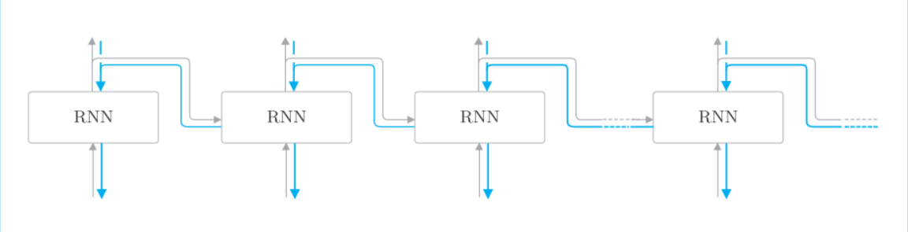
Truncated BPTT
在处理长时序数据时, 通常做法是将网络序列截取适当的长度, 严格地来讲, 只是将网络的反向传播的连接截断, 正向传播的连接依然不变.
假设有一个长度为1000的时序数据, 在自然语言处理的情境下, 相当于一个有1000个单词的句子. 如果展开RNN层, 将在水平方向上排列有1000个层的网络.
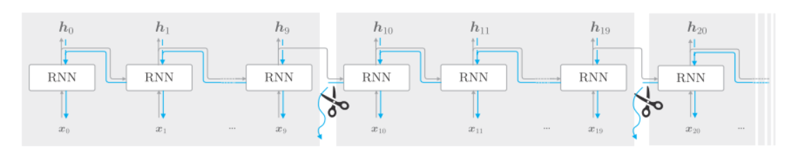
如上图, 以10个RNN层为单位进行截断, 各个单位之间没有关联, 因此可以在各个单位内完成误差的反向传播.
考虑使用Truncated BPTT来学习RNN. 首先 ,将第1块的输入数据输入到RNN层, 如下图:
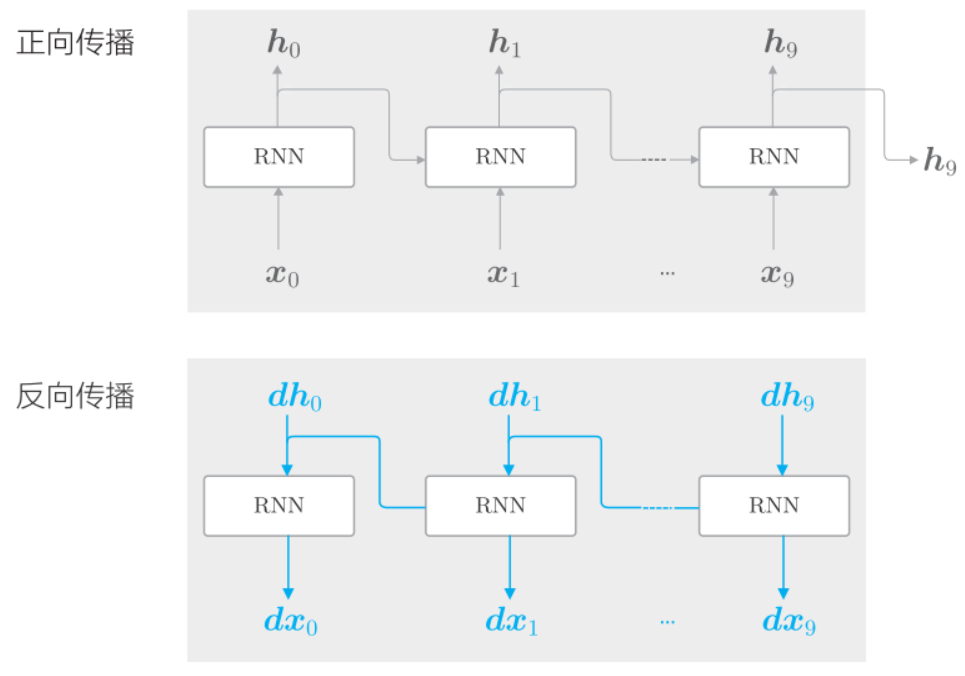
可以看到, 因为截断反向传播时, 在时刻, 没有上一层的梯度传过来. 但是正向传播没有被截断, 所以传入到了下一个单元. 接着来到下一个单元, 如下图:
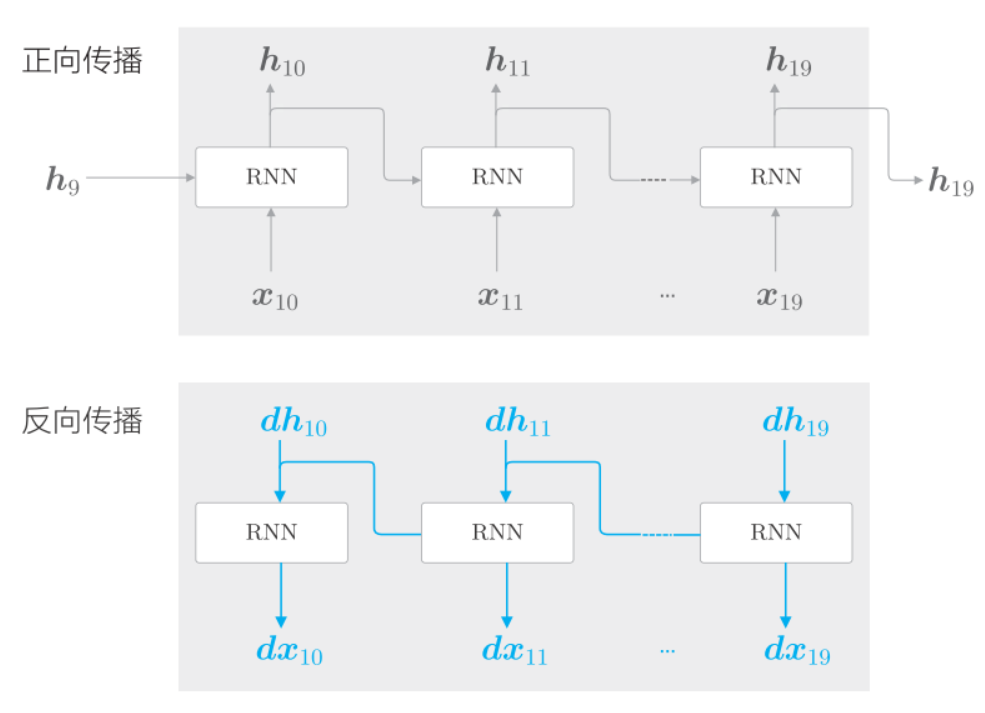
和第1个单元一样, 先执行正向传播, 再执行反向传播. 正向传播开始时计算了上一个单元传进来的, 而反向传播则没有使用的梯度, 同样的道理继续, 如下图:
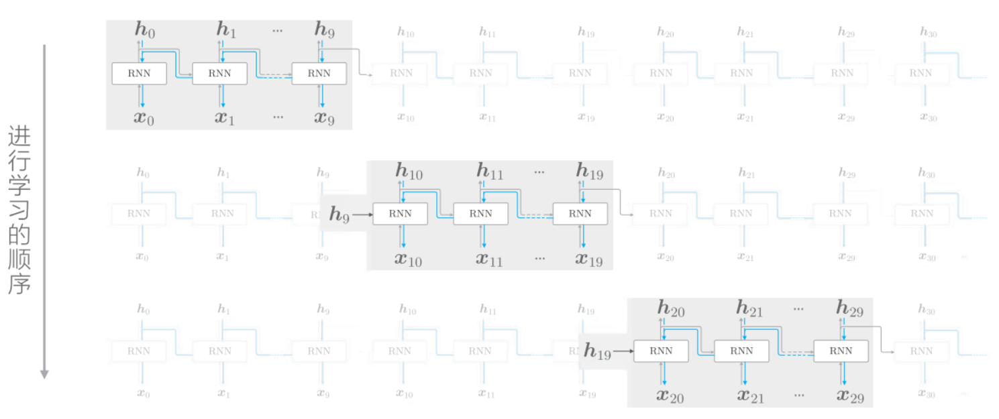
RNN的实现
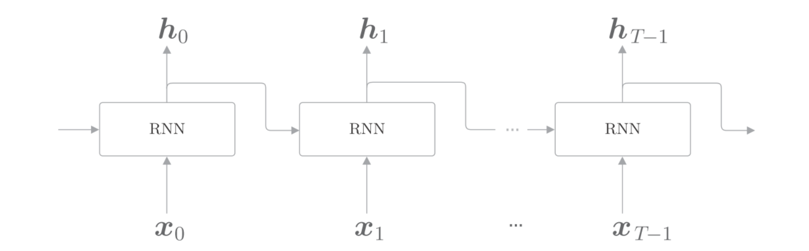
目标神经网络接收长度为的时序数据(T为任意值), 输出各个时刻的隐状态个. 考虑模块化, 可以将水平方向延伸的神经网络看做一个层, 如下图:
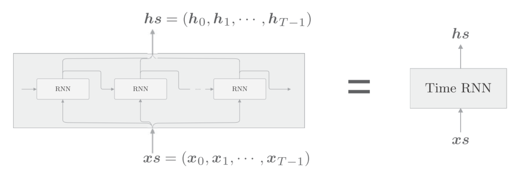
可以将捆绑为作为输入, 将捆绑为作为输出. 这里将单步处理的层称为"RNN"层, 将一次处理步的层称为"Time RNN"层.
单步RNN层的实现
公式:
将数据整理为mini-batch进行处理, 假设输入个数是, 输入的向量的维度是, 隐藏状态向量的维度是, 则:
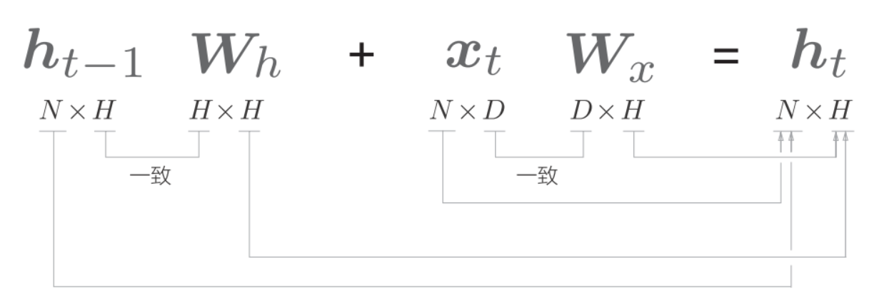
python实现:
class RNN:
def __init__(self, Wx, Wh, b):
self.params = [Wx, Wh, b]
self.grads = [np.zeros_like(Wx), np.zeros_like(Wh),
np.zeros_like(b)]
self.cache = None
def forward(self, x, h_prev):
Wx, Wh, b = self.params
t = np.dot(h_prev, Wh) + np.dot(x, Wx) + b
h_next = np.tanh(t)
self.cache = (x, h_prev, h_next)
return h_next__init__方法
- 接收两个权重参数和一个偏置参数, 并存入变量
params中. - 各个参数对应形状的初始化梯度, 保存在
grads中. - 使用
None对反向传播是需要用到的中间数据cache进行初始化
forward(x, h_prev)方法, 接收两个参数
- 从下方输入的
x - 从左边输入的
h_prev
代码流程, 如下图:
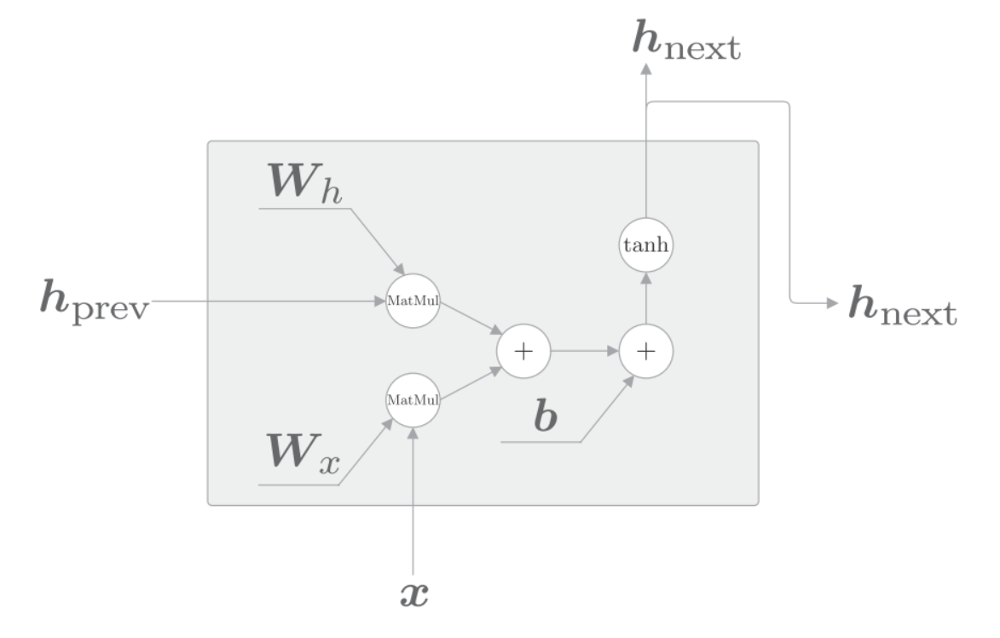
进行的计算由矩阵乘积"MatMul", 加法"+", "tanh"这三种运算构成.
对应反向传播, 如下图:
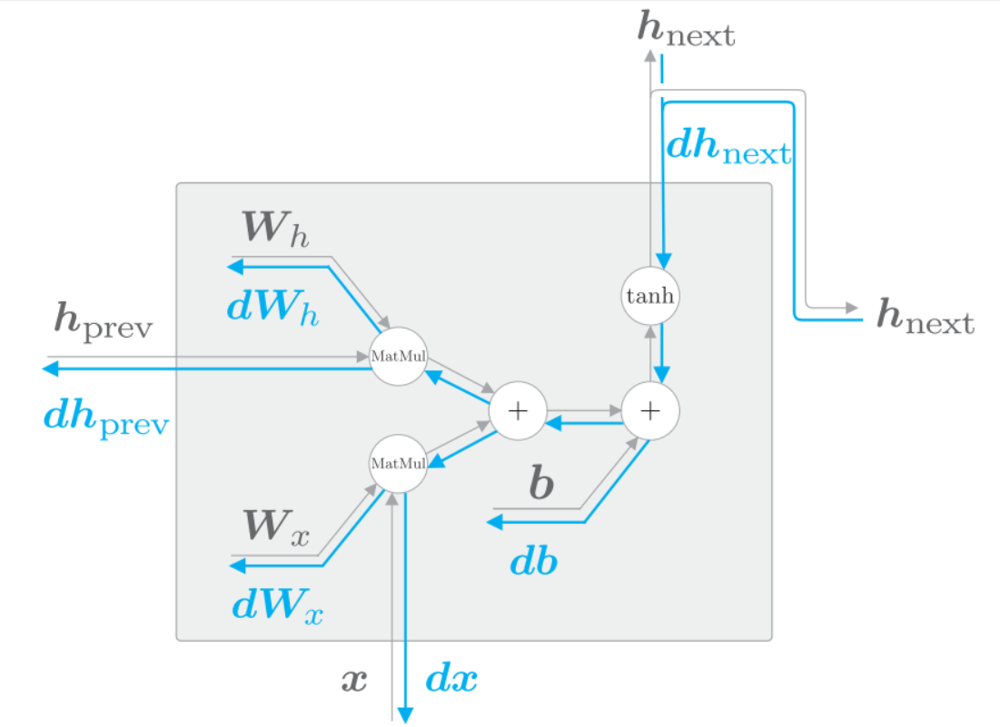
python实现:
def backward(self, dh_next):
Wx, Wh, b = self.params
x, h_prev, h_next = self.cache
dt = dh_next * (1 - h_next ** 2)
db = np.sum(dt, axis=0)
dWh = np.dot(h_prev.T, dt)
dh_prev = np.dot(dt, Wh.T)
dWx = np.dot(x.T, dt)
dx = np.dot(dt, Wx.T)
self.grads[0][...] = dWx
self.grads[1][...] = dWh
self.grads[2][...] = db
return dx, dh_prevTime RNN层的实现
Time RNN层由T个RNN层构成(T 可以设置为任意值)
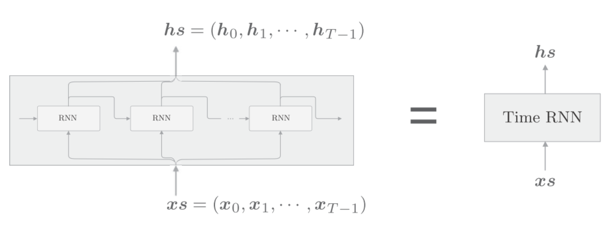
python实现:
class TimeRNN:
def __init__(self, Wx, Wh, b, stateful=False):
self.params = [Wx, Wh, b]
self.grads = [np.zeros_like(Wx), np.zeros_like(Wh),np.zeros_like(b)]
self.layers = None
self.h, self.dh = None, None
self.stateful = stateful
def set_state(self, h):
self.h = h
def reset_state(self):
self.h = None__init__方法参数有权重, 偏置和stateful.
self.params保存权重矩阵
self.grads保存权重矩阵对应的梯度
self.layers保存多个单步RNN层
self.h保存调用forward()方法时的最后一个RNN层隐状态.
self.dh保存传给前 一个单位的隐状态的梯度.
self.stateful
- 为True, 是有状态的意思, 具体指维持
Time RNN层的隐藏状态. 也就是说, 无论时序数据多长, Time RNN的正向传播都可以不中断的进行. - 为False, 第一个RNN层的隐藏状态会被初始化为零矩阵, 没有状态的模式, 称为无状态.
实现正向传播
def forward(self, xs):
Wx, Wh, b = self.params
N, T, D = xs.shape
D, H = Wx.shape
self.layers = []
hs = np.empty((N, T, H), dtype='f')
if not self.stateful or self.h is None:
self.h = np.zeros((N, H), dtype='f')
for t in range(T):
layer = RNN(*self.params)
self.h = layer.forward(xs[:, t, :], self.h)
hs[:, t, :] = self.h
self.layers.append(layer)
return hs forward(xs)方法从下方获得输入, 包含了个时序数据, 如果批大小是, 输入向量的维度是, 则的形状为.
首次调用时(self.h=None), RNN层的隐藏状态由零矩阵初始化.另外, 在stateful为false的情况下, 将总是被重置为零矩阵. 也就是说,
- 如果我们预测不相干的两句话分类, 则在预测完第一句话以后, 就要重置
self.h为零矩阵, 此时要设置self.stateful为False - 如果我们要预测相关的两句话, 比如不停的生成文本, 那么每句话都要使用前一句话的
self.h, 此时要设置self.stateful为True
具体过程:
- 首先通过
hs = np.empty((N, T, H), dtype='f')为输出准备一个容器. - 在 T 次 for 循环中, 生成 RNN 层，并将其添加到成员变量 layers 中
- 计算RNN层各个时刻的隐藏状态, 并存放在
hs的对应时刻中.
实现反向传播
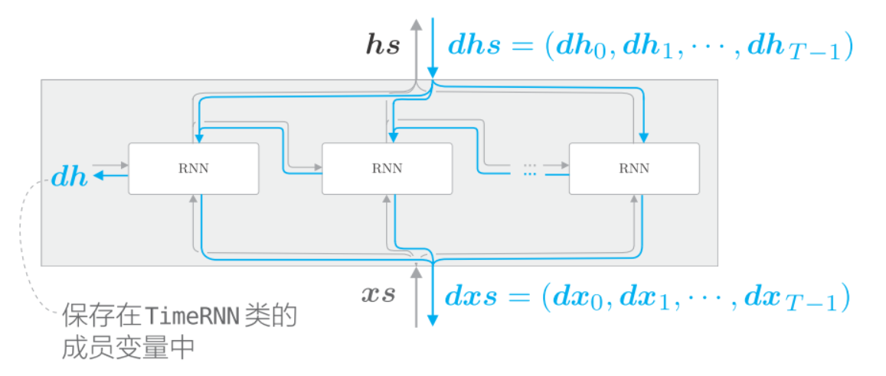
如上图, 将上游传来的梯度记为, 将流向下游的. 因为这里我们进行的是
Truncated BPTT, 所以不需要流向这个单元的上一时刻的反向传播. 不过我们将流向上一时刻的隐藏状态的梯度存放在成员变量中. 如果关注第t个RNN层, 则如下图: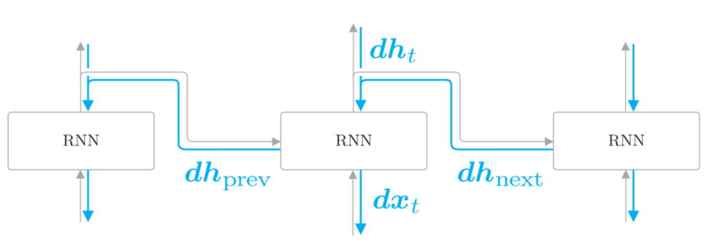
从上方传来的梯度和从上游传来的梯度会传到第t个RNN层. 注意, RNN层的正向传播的输出有两个分叉. 在正向传播存在分叉的情况下, 在反向传播时各梯度将被求和. 因此在反向传播时, 流向RNN层的是求和后的梯度.
python实现:
def backward(self, dhs):
Wx, Wh, b = self.params
N, T, H = dhs.shape
D, H = Wx.shape
dxs = np.empty((N, T, D), dtype='f')
dh = 0
grads = [0, 0, 0]
for t in reversed(range(T)):
layer = self.layers[t]
dx, dh = layer.backward(dhs[:, t, :] + dh) # 求和后的梯度
dxs[:, t, :] = dx
for i, grad in enumerate(layer.grads):
grads[i] += grad
for i, grad in enumerate(grads):
self.grads[i][...] = grad
self.dh = dh
return dxs- 创建传给下游的梯度的"容器"(
dxs) - 按与正向传播相反的方向, 求各个时刻的梯度
dx, 并存放在dxs对应的时刻处
Time RNN层中每个单步的RNN层使用相同的权重, 因此Time RNN层的最终权重梯度是各个RNN层的权重梯度之和.